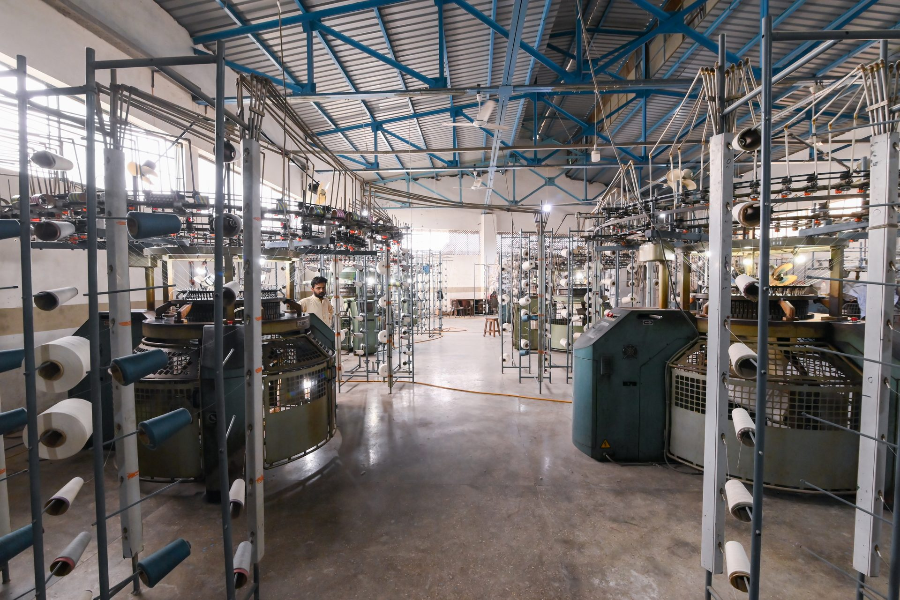
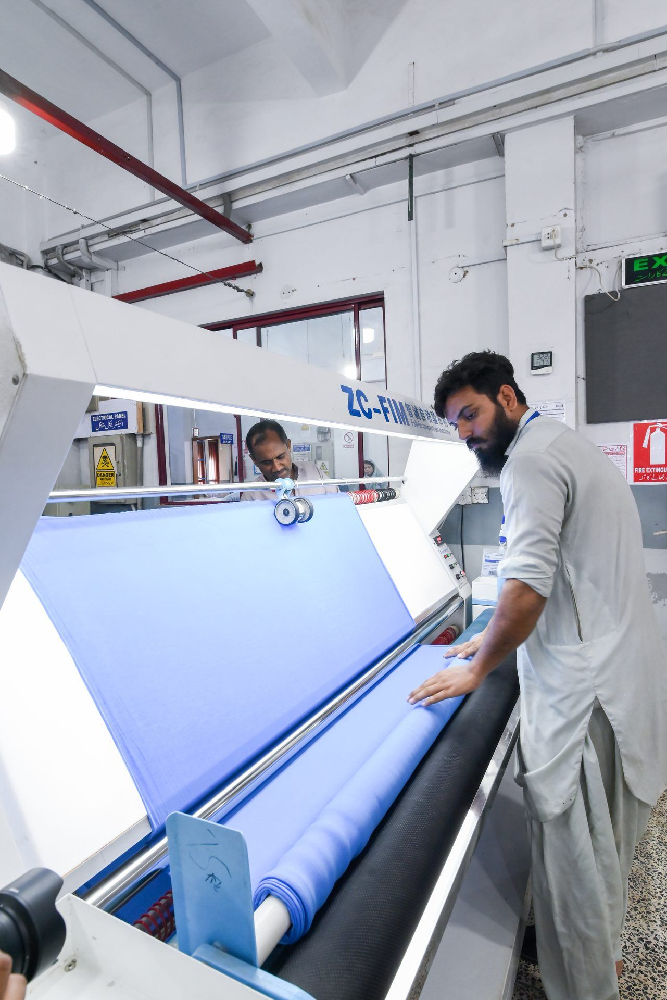

State of the Art Stitching
Modern stitching machines set up permanently for bottoms.

The knitwear division is a contemporary vertical unit, offering complete knitting solutions with facilities rarely found together under one roof in Pakistan.

The unit is complete in every other respect too, with in house knitting and stitching. Because the fabric is made where the garment is made, hand feel, shrinkage and shade are controlled from the first roll rather than negotiated with a supplier.
Knitting capability covers a range of yarn blends, including 100% cotton and blends that can be fed with spandex.
In house engineer stripe knitting across the full gauge range.
Modular chain basket system, each department with its own QC, inspection, pressing and packing wing.
Modern stitching machines set up permanently for bottoms.
Clean, repeatable welt pockets on trousers and jeans.
Dedicated button holing for waistbands and flies.
Belt loops made in house to the exact width required.
Loops attached consistently, at speed.
Feed-off-the-arm machines for durable side and inseam work.